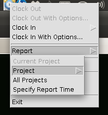

| [ < ] | [ > ] | [ << ] | [ Up ] | [ >> ] | [Top] | [Contents] | [Index] | [ ? ] |
Reports can be generated for single projects or all projects.
Several options are available from the report menu:
The following illustrates these options:
Generating a report for a single project will result in a HTML report being generated on disk (see UI Configuration for information on setting the report file generation directory). Generating a report for all projects will result in the reports being produced in an HTML page with links to each project and links back to the top of the page.
In each case the newly generated report will be opened using the default OS browser.
| [ < ] | [ > ] | [ << ] | [ Up ] | [ >> ] |
This document was generated by rich on April 1, 2013 using texi2html 1.82.